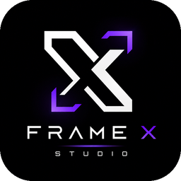
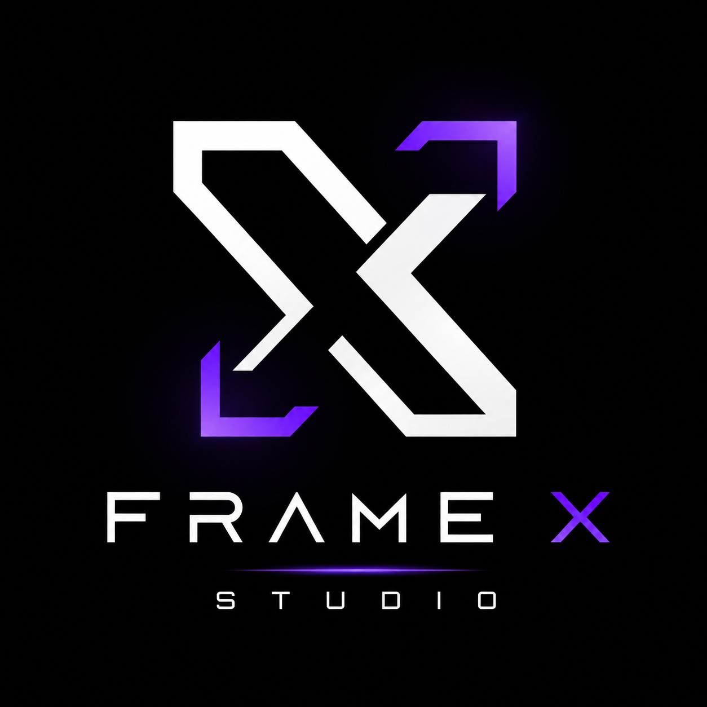

01◈
Web & Experiências
Sites, landing pages, páginas comerciais e soluções web personalizadas.

FRAME X STUDIO
FRAME XSTUDIO Solicitar orçamento →Sites, Inteligência Artificial, conteúdo e soluções digitais criadas com estratégia, tecnologia e atenção aos detalhes.
Você explica o que precisa e eu retorno pelo WhatsApp.
A Frame X Studio transforma boas ideias em experiências digitais profissionais — sem transformar presença digital em um investimento inacessível.
À frente do estúdio, Caio Cavalcante une criação digital, tecnologia e Inteligência Artificial para desenvolver soluções personalizadas, bonitas e funcionais.
Conte sua ideia →Um estúdio digital para quem quer presença, tecnologia e conteúdo com identidade.
Sites, landing pages, páginas comerciais e soluções web personalizadas.
Vídeos, imagens, avatares, modelos virtuais, publicidade e soluções com IA.
Fluxos e soluções inteligentes para reduzir trabalho manual e ganhar eficiência.
Conteúdo para redes sociais, criativos publicitários e presença digital.
Passe o mouse pela prévia e clique em “Ver site”.
Arraste para o lado, veja cada solução e abra o vídeo em destaque.
Campanhas, produtos, moda, gastronomia, turismo, ambientes e outras possibilidades criadas com IA.
Arraste o divisor com o mouse ou com o dedo para comparar o antes e o depois da restauração.
Personagens e modelos virtuais com identidade própria para apresentar produtos, produzir conteúdo e criar presença consistente sem depender de gravações tradicionais.
Soluções sob medida, investimento inteligente e qualidade visual para diferentes momentos do seu negócio.
Conte sua ideia →Sem complicação: entendemos o que você precisa e transformamos isso em uma solução digital com identidade.
Explique seu objetivo, produto ou serviço em poucos minutos.
Definimos a melhor solução e o formato ideal para o seu projeto.
Criação, ajustes e entrega com foco em qualidade e apresentação profissional.
Conte o que você precisa. A Frame X pensa na solução certa para o seu projeto e para o momento do seu negócio.
Falar no WhatsApp